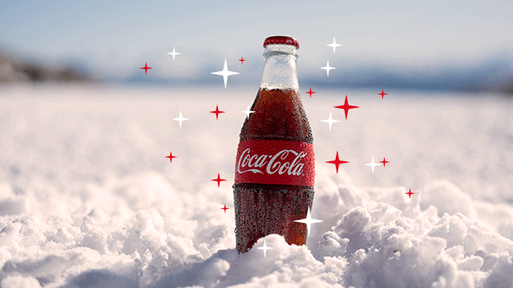

GINGER MED
Principal
Introducci贸n:
Este proyecto presenta a Ginger Med, una iniciativa dedicada a transformar las propiedades milenarias del jengibre en productos de cuidado personal. Nos enfocamos en aprovechar las capacidades antiinflamatorias y antioxidantes de esta ra铆z para ofrecer una alternativa natural y efectiva.
Objetivos:
Desarrollar un t贸nico a base de jengibre que promueva la salud capilar y cut谩nea. Informar sobre los m茅todos de cultivo y extracci贸n artesanal de los beneficios del jengibre. Consolidar la identidad visual y los valores de la marca Ginger Med.
Con贸cenos
Nombres:
Arce Perez Anna Helena
Cabrera Morales Valentin
Carrillo Torres Eric Daniel
Gonzalez Esquivel Mario Emmanuel
Malagon Olguin Maximino
Mendoza Cruz Nayeli
Contactos:
anna.230310262@a.cobaq.edu.mx
valentin.230310367@a.cobaq.edu.mx
eric.231010011@a.cobaq.edu.mx
mario.230310175@a.cobaq.edu.mx
Maximino.230310434@a.cobaq.edu.mx
nayeli.230310519@a.cobaq.edu.mx
Redes:
Encu茅ntranos en redes sociales como Ginger Med, donde mostramos el desarrollo de nuestra identidad visual, logotipos y esl贸ganes.
Planta y Beneficios
H谩bitat y Cuidados:
El jengibre (Zingiber officinale) es una planta de clima tropical que requiere sombra parcial, mucha humedad y un suelo rico en materia org谩nica con buen drenaje.
Beneficios a Largo Plazo:
Gracias a su alto contenido de gingerol, el uso constante ayuda a combatir el envejecimiento celular, reducir la caspa en el cuero cabelludo y fortalecer los fol铆culos pilosos.
Beneficios a Corto Plazo:
Gracias a su alto contenido de gingerol, el uso constante ayuda a combatir el envejecimiento celular, reducir la caspa en el cuero cabelludo y fortalecer los fol铆culos pilosos.
Reproducci贸n y Uso
Producci贸n y Uso de los Productos:
La producci贸n se realiza mediante la extracci贸n controlada del jugo del rizoma de jengibre, el cual se filtra y estabiliza para mantener sus enzimas activas y sus beneficios intactos.
Usos Recomendados:
Se recomienda aplicar el t贸nico directamente sobre la piel o el cuero cabelludo limpio. Es ideal para usar despu茅s del ejercicio o como parte de la rutina de cuidado nocturno.
Producto
T贸nico:
Nuestro t贸nico estrella Ginger Med est谩 dise帽ado para ser ligero, de r谩pida absorci贸n y con un aroma c铆trico natural caracter铆stico del jengibre fresco.
Procedimientos:
El proceso incluye la selecci贸n de rizomas maduros, lavado, triturado, prensado en fr铆o para obtener el extracto y mezcla con agua destilada para alcanzar la concentraci贸n ideal.
Materiales:
Utilizamos rizomas de jengibre org谩nico, agua destilada, filtros de tela fina, envases de vidrio 谩mbar para proteger el producto de la luz y etiquetas biodegradables.
Experiencia
Experiencia en hacerlo:
El desarrollo de Ginger Med nos permiti贸 aprender sobre procesos qu铆micos naturales y la importancia de la precisi贸n en las medidas para obtener un producto seguro y estable.
An茅cdota:
Durante nuestras primeras pruebas, aprendimos que el jengibre es extremadamente potente; al principio el aroma era tan intenso que tuvimos que ajustar la f贸rmula varias veces hasta encontrar el equilibrio perfecto.
Contactos
Escuela:
Colegio De Bachilleres del Estado De Queretaro
Nombres:
Arce Perez Anna Helena
Cabrera Morales Valentin
Carrillo Torres Eric Daniel
Gonzalez Esquivel Mario Emmanuel
Malagon Olguin Maximino
Mendoza Cruz Nayeli
Correos:
anna.230310262@a.cobaq.edu.mx
valentin.230310367@a.cobaq.edu.mx
eric.231010011@a.cobaq.edu.mx
mario.230310175@a.cobaq.edu.mx
Maximino.230310434@a.cobaq.edu.mx
nayeli.230310519@a.cobaq.edu.mx
CARRUSEL DE FOTOGRAF��AS
VIDEOS

 2026
2026